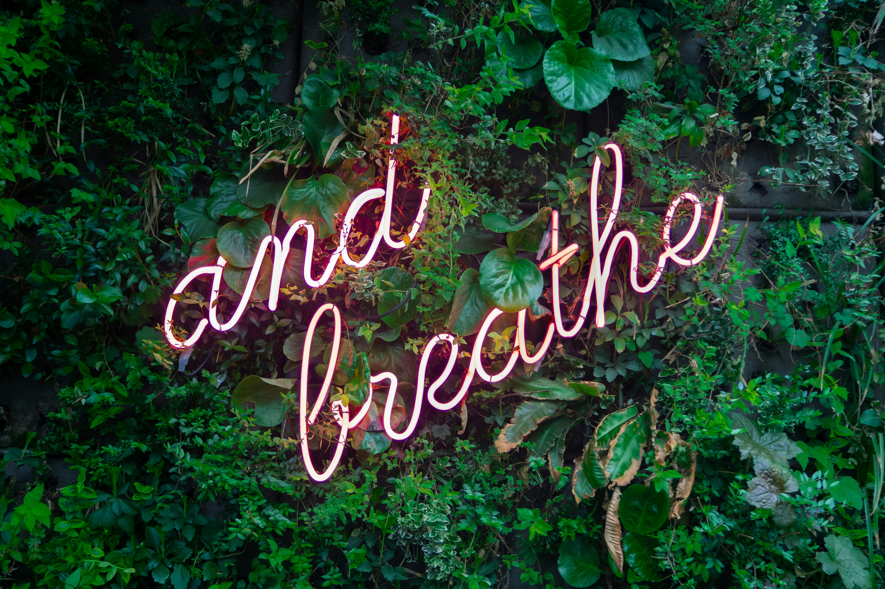

May is Mental Health Awareness Month. To show our support, we’re donating 50% of all sales throughout the month to the American Foundation for Suicide Prevention. These funds will go toward vital initiatives like advancing mental health research, improving suicide prevention interventions, training clinicians, and advocating for policy that will save lives. AFSP’s mission is to save lives and bring hope to those affected by suicide.
We invite you to stop by and consider donating towards an amazing cause. Your generosity will help combat the stigma surrounding mental health and provide critical resources to those in need. Together, we can make a difference and help save lives across the nation.
A churro lover’s dream come true—this Snickerdoodle latte is made with warm hints of cinnamon and brown sugar. This drink has the perfect blend of sweet spices and rich, freshly brewed espresso. This menu item can be sold hot or iced.

Want to learn more? Visit our homepage here!